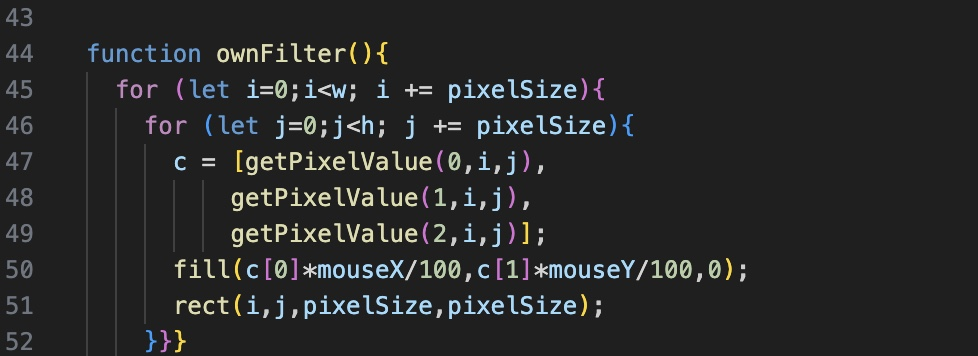

Billedemanipulation
Vi har i det her forløb arbejdede med billedemanipulation og set på hvordan vi kan redigere og tilføje effekter på almindelige billeder, som fx at gøre billedet mere eller mindre pixeleret eller at trække mere af en bestemt farve ud af billedet for at give det et rødt eller grønt skær fx. Kravene til projektet var at vores program kunne:
- Redigere et billede ved manipulation på pixelniveau
- Tilføje effekter til billedet
Hvordan fungerer programmet
Vores oprindelige tanke om hvad vi gerne ville have vores projekt det kunne var, at vi ville prøve at ændre farven i billedet ved hjælp af nogle sliders. Dette kan man se i vores projekt ved at når man trækker musen vandret hen af skærmen bliver billedet mere rødt jo læmgere til højre musen er. Yderligere har vi gjort sådan at når man trækker musen lodret hen af skærmen bliver billedet mere grønt jo længere nede musen er. Og når jeg siger at billedet bliver mere rødt eller grønt mener jeg i virkeligeheden at der bliver trukket mere af den henholdsvis grønne eller røde farve ud af pixerlerne, jo højere mouse-x og mouse-y værdierne er. Det var så vores vigtigste mål for hvad vores projekt skulle kunne, men vi havde så derudover et mål om at kunne tegne på billedet. Det gjorde vi på den måde at når man trykker på musen så tegner den en sort firkant over billedet ved at bruge funktionen "mousePressed", og hvis man holder musen inde og hiver musen rundt så fortsætter programmet med at tegne sorte firkanter der hvor musen er, og det gjorde vi ved at bruge funktionen "mouseDragged".
Prøv programmet her!
Projekt
Kodestump

Vi kan her se i linje 50 det jeg forklarede ovenfor. Programmet trækker den røde farve ud af pixelerne ved at gange den andel af rød der er i hver pixel med mouse-x værdien og dividere med 100, det betyder derfor at billedet bliver mere rødt jo højere mouse-x værdien er, altså jo længere mod højre musen er. Programmet gør så det samme bare med den grønne farve og ganger her i stedet med mouse-y værdien. Man kan skelne mellem farverne ved at se på tallet efter "c", rød er lig med 0 da det er den første farve i rækkefølgen, (RGB; Rød, Grøn, Blå). Grøn vil derfor være lig med 1, blå med 2, og så er det et fjerde ikke-tal der er lig med 3, der hedder alpha som er gennemsigtigheden.
Tilbage til hovedsiden